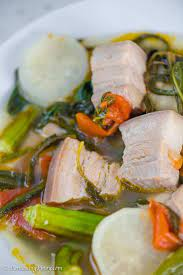

Sinigang

Sinigang is a Filipino soup or stew characterized by its sour and savory taste.
Ingredients
- Pork Belly Cubes
- Kangkong Leaves
- Chili Peppers
- Tomato
- Radish
- Beans
Steps
- Pour water into a cooking pot. Let boil.
- Add onion and tomato. Boil for 5 to 8 minutes.
- Put the pork in the cooking pot. Boil for 25 minutes.
- Add the taro. Cover and continue to boil for 30 minutes.
- Add Knorr Sinigang sa Sampaloc mix, fish sauce, and ground black pepper; stir.
- Put the daikon radish in. Cook for 3 to 5 minutes.
- Add the chili peppers, okra, and snake beans. Cook for 7 minutes.
- Add the kangkong. Cover the cooking pot and turn off the heat. Let it stay covered for 5 minutes.
- Transfer to as serving bowl. Serve with a small bowl with patis and spicy chili.
- Share and enjoy!
Return to Home